Rear
WHEEL HUB, KNUCKLE REMOVAL/INSTALLATIONCaution:
- Performing the following procedures without first removing the ABS wheel-speed sensor may possibly cause an open circuit in the harness if it is pulled by mistake. Before performing the following procedures, remove the ABS wheel-speed sensor (axle side) and fix it to an appropriate place where the sensor will not be pulled by mistake while servicing the vehicle.
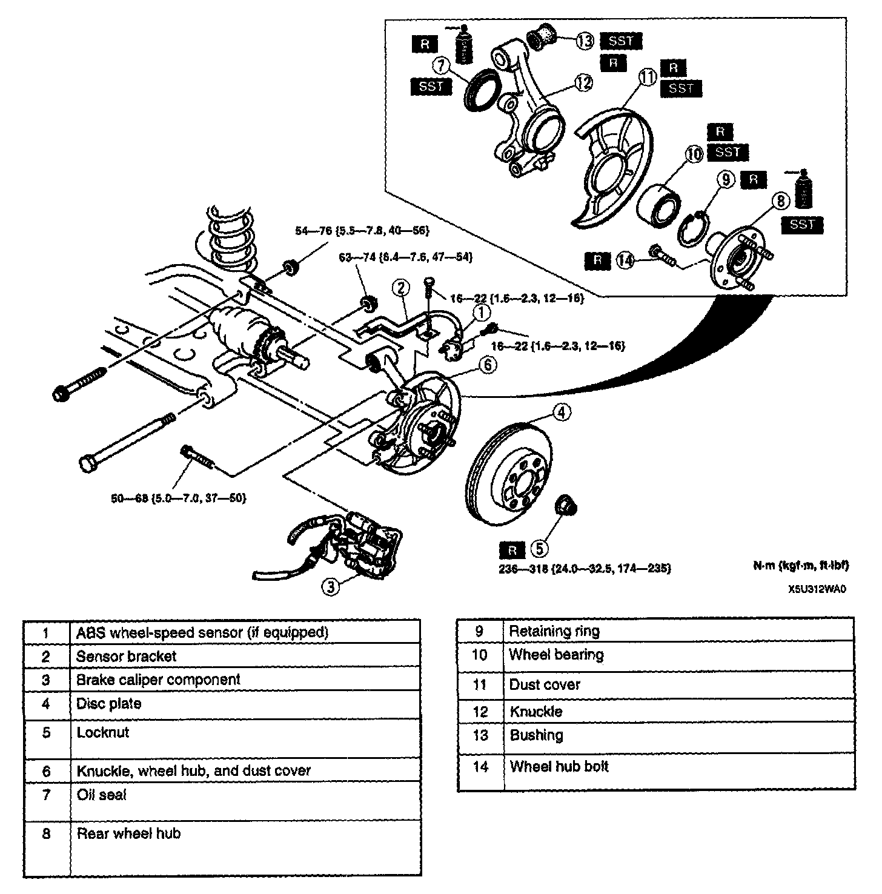
1. Remove in the order indicated in the table.
2. Install in the reverse order of removal.
Rear Wheel Hub Removal Note
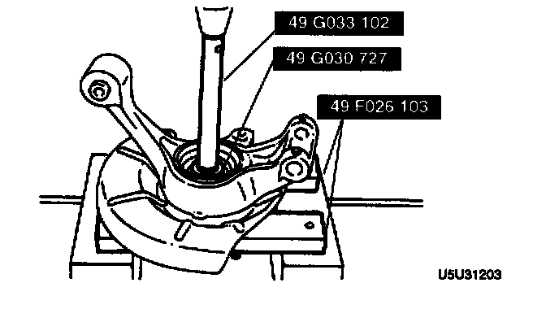
- Press out the rear wheel hub component by using the SSTs.
Wheel Bearing Removal Note

1. Press out the wheel bearing by using the SSTs.
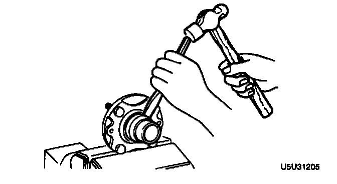
2. Move the bearing inner race away from the rear wheel hub component by using a chisel.
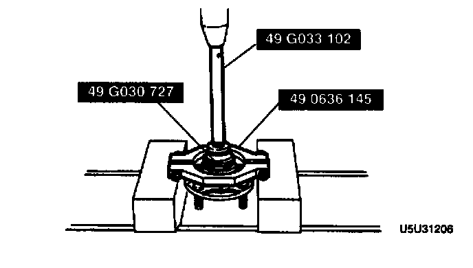
3. Press the bearing inner race off the wheel hub by using the SSTs.
Dust Cover Removal Note
Note:
- The dust cover does not need to be removed unless replacing it.
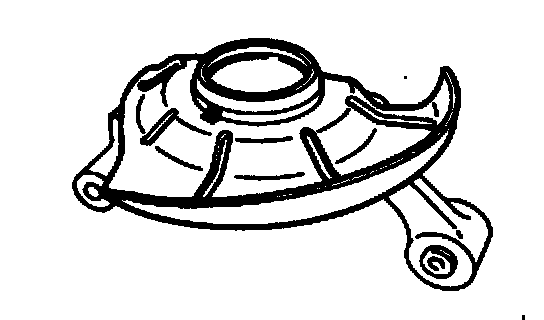
1. Mark the dust cover and knuckle for proper reassembly.
2. Remove the dust cover by using a chisel.
Bushing Removal Note
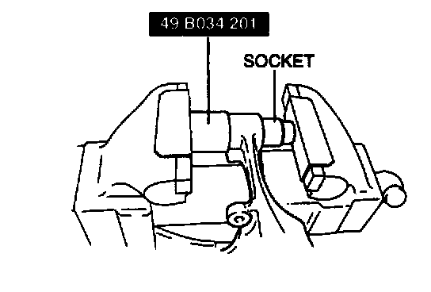
- Press out the bushing by using the SST and a socket
Bushing Installation Note
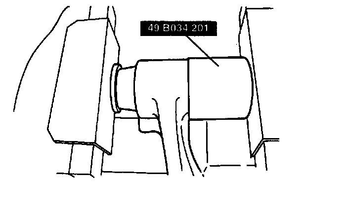
- Apply soapy water to the bushing, then press it into the knuckle by using the SST.
Dust Cover Installation Note
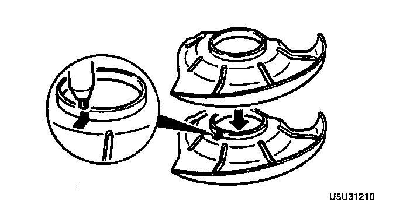
1. Mark the new dust cover as the same point as the removed one.
2. Align the marks of the new dust cover and the knuckle.
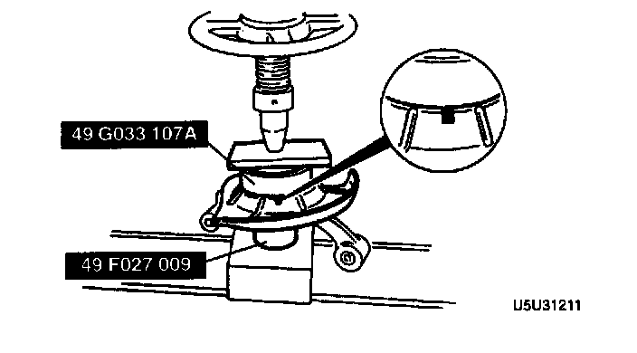
3. Install the new dust cover by using the SSTs.
Wheel Bearing Installation Note
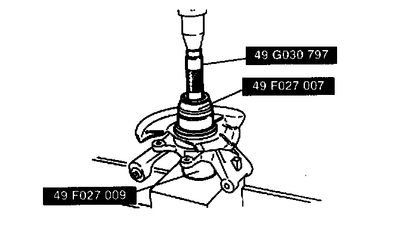
- Press the new wheel bearing into the knuckle by using the SSTs.
Rear Wheel Hub Installation Note
1. Apply grease to the wheel bearing inner race.
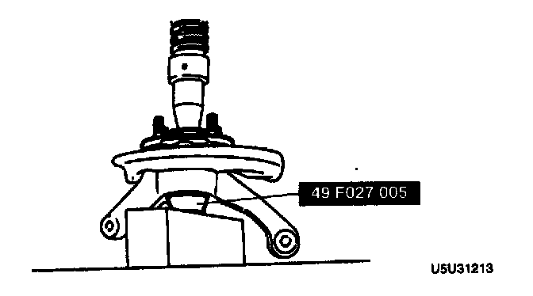
2. Press the rear wheel hub component in by using the SST.
Oil Seal Installation Note
1. Apply grease to the new oil seal lip.
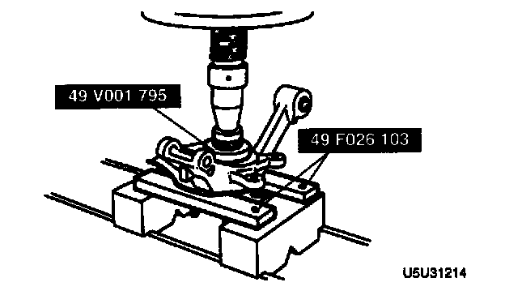
2. Install the new oil seal by using the SSTs.
Locknut Installation Note
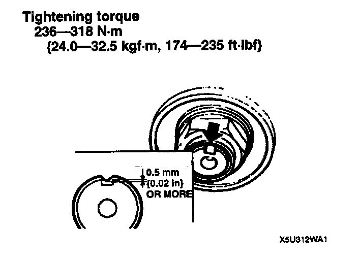
- Install a new locknut and stake it.
Tightening torque 24.0-32.5 Nm (24.0-32.5 kg-m, 174-235 ft. lbs.)